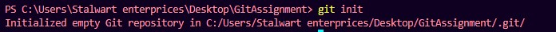

Tutorial For Learning Git Commands
How to link the local repositry with remote repositry
- Run git init command : First we have to declare the local repositry as a git repository.

- Now you have to make a new repository on your GitHub account with defualt settings.

- Copy the link of newly created repository.

- Run command git remote add orgin repositorylink: After running this your local directory is connected with the remote repository.
How to push files on the remote repository
- Run git add . command: The git add command is used to place the modified version of the working directory in the staging area (Files that are going to be a part of the next commit).

- Run git push --set-upstream origin master command : This will upload your files to the git remote repository